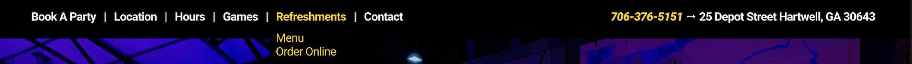
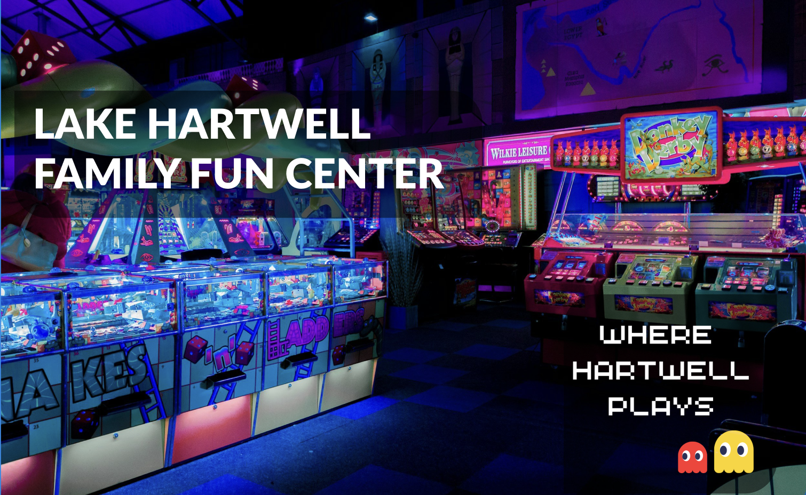
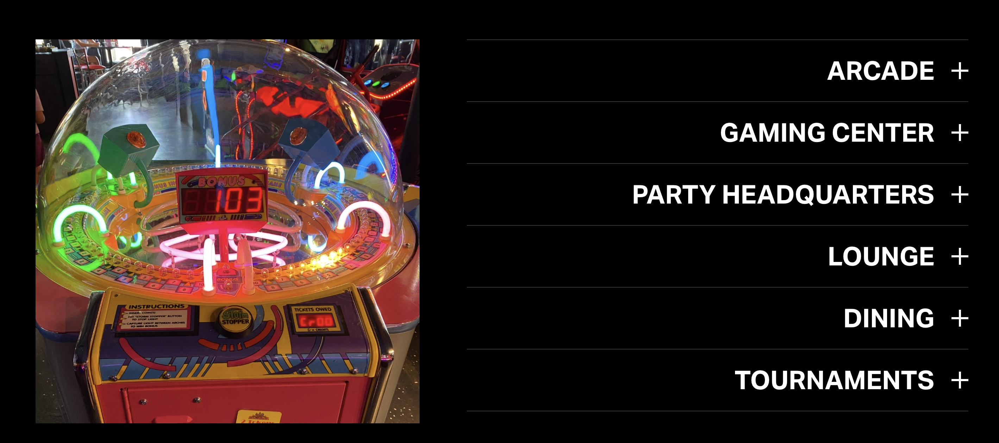
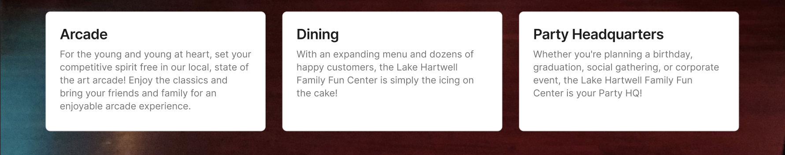

Navigation
UX studies indicate that website navigations with more than seven navigation links become confusing to the end-user. This website has 12 top-level navigation links, including the Facebook and Cart icons.
Removing the logo, which clashes with the rest of the design, frees up space in the navigation. Trimming back the number of top-level navigation items also leaves room to add the phone number and address. Due to the nature of a business like this, quick access to location and contact info is paramount. I used the yellow as an accent color for the phone number, the active state on the navigation item, and the sub-level navigation items.

Hero Imagery
The photo of the arcade is great and has interesting colors so that should be the focus "above the fold". The text "Discover the Fun" and "ARCADE. LOUNGE. GAMING CENTER. LAKE HARTWELL PARTY HQ." are just not worth the real estate. Ideally, a well designed logo would work well over the hero imagery, but a clear heading with the business name is the second best option. I chose a clean sans-serif font, Lato, but anything readable and not too distracting would work.
In this context, it would be tempting to go with a cartoony font but that detracts from the background image. We don't need the text to communicate "arcade" because the imagery does that on its own. I like the little Pac-Man images, but moving them "above the fold" balances out the page more effectively.
Accordian
This section does not add much value to the homepage as it is currently presented. The "accordian" expands to reveal small amounts of text that could be displayed more efficiently. Since the image on the left is not important to the section, it would be better to opt for text-based tiles instead of the accordian layout. Three of the sections also do not contain content, so pairing those down to a few content cards would be the best option.
Getting rid of the extra noise allows us to focus the user's attention to what is important. You could easily add buttons and calls to action to those content cards, but restricting ourselves to the cards forces us to focus our message and choose our copy wisely.
Summary
As is the case with most designs, less is more. It is tempting to try to put every piece of information we can find on the homepage of the website, but that is not the best user experience. By focusing our messaging, we can drive user interaction and create conversions. Limiting navigation items, removing distracting imagery, and cleaning up our content presentation can present a more professional and impactful experience.
I have no affiliation or contact with this website owner and just found it while browsing online. If you want to see the live site, you can find it here.